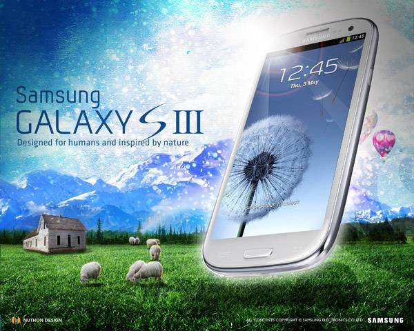

Nature & Technology
Frutiger Aero combined glossy interfaces with natural elements: green fields, blue skies, and transparent glass. Cell phones were a frequent item taking center stage...
Glassmorphism
Semi-transparent panels, vibrant colors, soft inner glows, and subtle reflections defined the era, visible most in Internet Explorer's frosted windows.

Skeuomorphism
Realistic textures, drop shadows, and highlights made digital elements pop from the screen; a welcome via familiarity, which is why the style seems nostalgic for so many.